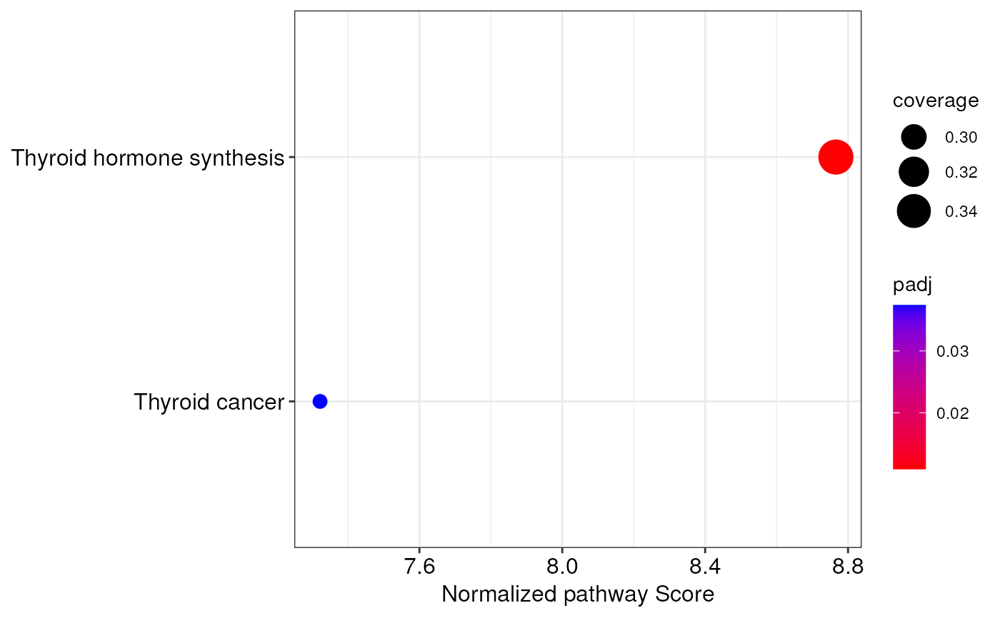

Display integrated miRNA-mRNA augmented pathways in a dotplot
Source:R/visualization.R
integrationDotplot.RdThis function produces a dotplot that depicts the results of a
topologically-aware integrative pathway analysis (TAIPA) carried out through
the topologicalAnalysis() function.
Usage
integrationDotplot(
object,
showTerms = 10,
showTermsParam = "normalized.score",
title = NULL
)Arguments
- object
An object of class
IntegrativePathwayAnalysis- showTerms
It is the number of pathways to be shown, based on the order determined by the parameter
showTermsParam; or, alternatively, a character vector indicating the pathways to plot. Default is10- showTermsParam
The order in which the top pathways are selected as specified by the
showTermsparameter. It must be one ofcoverage,padj,pval,scoreandnormalized.score(default)- title
The title of the plot. Default is
NULLnot to include a plot title
Details
When producing the dotplot with this function, significant pathways
are ordered on the x-axis on the basis of their normalized pathway score
computed by topologicalAnalysis(). The higher is this score, and the more
affected a pathway is between biological conditions. Moreover, the size
of each dot is equal to the ratio between the number of nodes for which a
measurement is available, and the total number of nodes (pathway coverage).
Finally, the color scale of dots is relative to the adjusted p-values of
each pathway.
Author
Jacopo Ronchi, jacopo.ronchi@unimib.it
Examples
# load example IntegrativePathwayAnalysis object
obj <- loadExamples("IntegrativePathwayAnalysis")
# create a dotplot of integrated pathways
integrationDotplot(obj)
